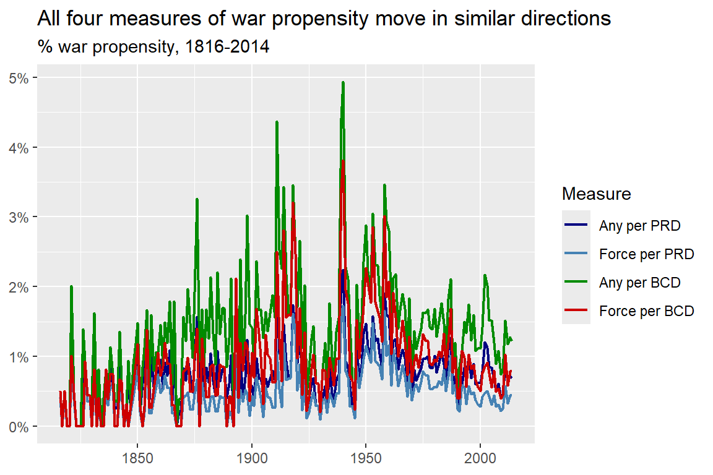
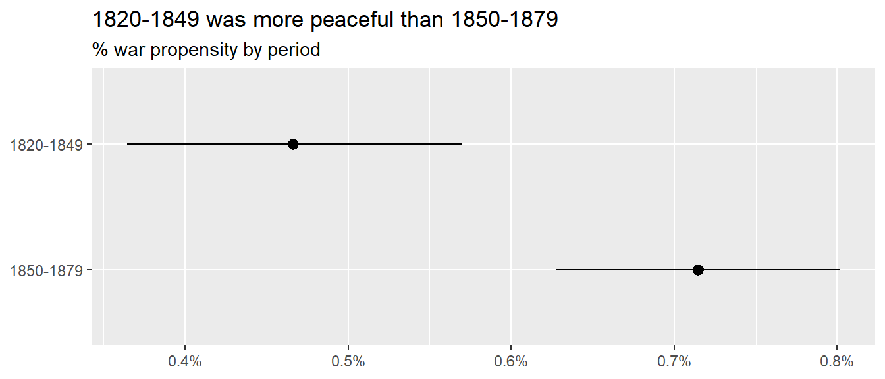
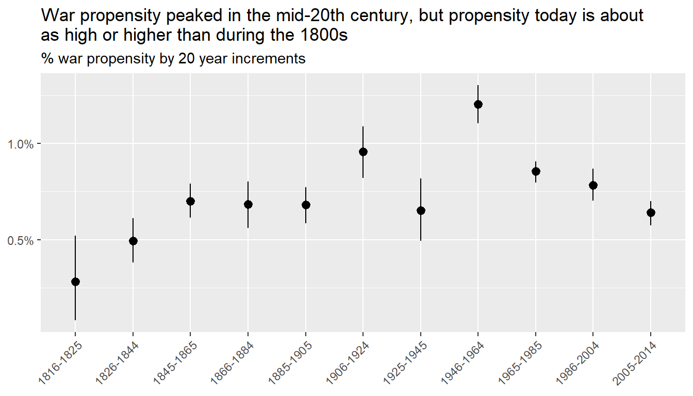

The decline of war thesis is the argument that conflict is becoming less common and deadly, and that this trend is decades (if not centuries) old.
A well-known criticism of this position was put forth by the political scientist Bear Braumoeller, first in a well-circulated conference paper (Braumoeller 2013a), and then in a well-received book that fleshed out his criticisms even more (Braumoeller 2019).
Braumoeller raises many concerns with the decline of war thesis, but two key issues for him were: (1) paying attention to what quantities are counted over time and (2) accounting for the role of chance in war and peace.
What you count over time concerns not just the numerator (conflict) but the denominator (how you adjust for changes in opportunities for countries to fight).
Doing statistical inference matters because changes can occur over time that look like real changes, when in fact they could just as easily be the result of random chance.
3.1 The Decline of War Thesis & Why It Matters
In this section, I plan to introduce you to the decline of war thesis. But before I do, I have a meandering anecdote for you…
I first learned about the decline of war thesis when I read Bear Braumoeller’s (2019) book, Only the Dead: The Persistence of War in the Modern Age. I was starting my third year as a Ph.D. student, and I learned that Prof. Braumoeller would be visiting my school, the University of Illinois at Urbana-Champaign, to give a talk at the political science department about his book.
I also learned that I’d been volunteered to pick him up from his hotel to take him to campus. I wanted to be prepared when I met Braumoeller for the first time, so I bought and read his book before he flew in from Columbus, OH where he was a professor at The Ohio State University. I think I read the whole thing, cover to cover, in just three days (including the R code in the book’s appendix for some of the analyses he did).
I devoured the book this quickly for two reasons, neither of which were a pathological need to appear like a smart graduate student to a well-known and respected scholar (or so I tell myself).
First, Braumoeller’s previous book, The Great Powers and the International System: Systemic Theory in Empirical Perspective(2013b), solidified my desire to study international relations for a living. He published it in 2013, and I read it in 2016 while working on my master’s. I had been wondering what would come next once I graduated. Reading Braumoeller’s book made my path very clear: I wanted to get my Ph.D. and do what Braumoeller was doing. I’ve been a fan of his work ever since. So, when I learned that the scholar whose work inspired me to go down the path of getting a Ph.D. to study international relations had just published another book, I couldn’t get my hands on it fast enough.
Second, with this new book (much like his first) Braumoeller sought to answer a big question in international relations: is war going away? Braumoeller had a reputation for doing incredibly smart and cutting edge quantitative work in international relations. If he had applied this same aptitude to one of the most important issues in the field, I had to know what he found.
Needless to say, I had really high expectations going into my first meeting with Braumoeller. That meant I also had a lot of nerves. Because of those nerves, I never directly asked him questions about his book while I drove him from his hotel to UIUC’s campus. Also, I thought I’d appear far too creepy expressing how inspiring his work was to me, so I never mentioned it. He asked me some questions about my own research interests, and I think my brain fell out of the back of my head when he did, because I neither sounded eloquent nor coherent as I explained the volatile brew of interconnected research questions percolating in my head.
I kick myself every time I think back on this experience. I met my hero, and I was too star-struck to make the most of it.
So, when I learned that I got a job at Denison, and that the suburb I would live in was the same that Braumoeller lived in (I promise this wasn’t on purpose), I thought I could try again. Instead, I got a tough lesson in not letting fear or nerves get in the way of the opportunities life gives you. When I first moved to the area, I learned Braumoeller was overseas on an extended leave doing further research, building on the work he did for Only the Dead. And then I learned some tragic news. In the summer of 2023 he unexpectedly passed away while abroad.
I was shocked, as was seemingly the whole field of international relations and even those in political science more generally. I think nearly the whole discipline new him in some way. I also felt incredibly sad, because he had a wife and young daughter that he’d be leaving behind.
I didn’t intend to stumble into some “real-talk” when I sat down to write this chapter, but you never truly know the thoughts working themselves out in your mind until you start writing. Consider this detour a nudge to meditate on the value of courage and of taking advantage of the chances life gives you. This nudge comes from a (still) young man who’s unfortunately already old enough to have accumulated some regrets in life. The experience that fueled this detour (and many others) serve as my own reminders that a little courage will take you a long way.
As off topic as that story may seem, I think it helps me make a key point about studying war.
It’s this: studying war with data has an ethical valence to it. Yes, the goal of a peace scientist is to be objective and quantitative about studying war, but because the object of this study is war, a life-and-death matter, it should be taken seriously. Above all, I think it requires some courage (I knew I could link this back to my anecdote in some way). To make claims about war, using data, is to make claims about the “iron dice” that, when rolled, may lead to no bloodshed and a quick resolution, or to thousands or (in rare cases) millions of deaths. You should make sure that you’re serious about the claims you make about war, but you also need to have the courage to make said claims if you think you’re right.
In the next chapter I’ll talk about how war size can be incredibly volatile and hard to predict, which makes the content of this chapter that deals with the onset of conflict all the more important. If countries are more willing, or less, to roll the iron dice today than in the past, this has existential implications for human lives.
The moral culpability of peace scientists enters the equation when considering how their findings can affect foreign policy and international politics. By making a claim that conflict is becoming rarer, more frequent, or as common as ever, they are making a policy recommendation whether they intend to or not. If the world is getting more peaceful, why should countries continue to invest in international institutions that help prevent conflict? If the world is getting more violent, shouldn’t major powers double-down on building up their military might, potentially diverting funds from domestic priorities?
I don’t mean to imply that the arc of international relations pivots on the conclusions drawn from a single data analysis. But the goal of data analysis for many social scientists (including those in the peace science tradition) is to make convincing arguments using data. If enough people in a field are convinced of an idea, it can start to catch the attention of practitioners operating in the policy world. Even very niche ideas can attract the attention of a decision-maker. So, while minuscule, a single analysis is part of the body of knowledge and claims accumulated about a subject, and for that reason, it matters.
This, in sum, is why the decline of war thesis deserves your attention. It is the argument, founded on a variety of data sources and theoretical propositions, that international conflict is becoming less likely and less deadly. Put another way, it’s the claim that countries are less apt to roll the iron dice today than decades or even a century ago, and that when the iron dice must roll, they are far less likely to land on another world war. You can imagine that an idea like this catching on can have tangle implications if enough people in the policy world think it’s true.
If true, this is great news. But if it’s false, it could be a “self-defeating prophesy” (the opposite of its equally devious twin of the self-fulfilling sort). Therefore, getting the decline of war issue right matters.
Braumoeller (2019) disagreed with the decline of war thesis for a variety of reasons, including its self-defeating implications, but in the next section I want to introduce just two of his data-driven critiques, because these will be the basis for the applied examples that follow. Importantly, his data-driven critiques do not on their own disprove the decline of war thesis; they deal with methodological rigor rather than substantive findings. But, Braumoeller claimed that when he applied appropriate measures and methods, the argument in favor of the decline of war thesis looked much less convincing.
3.2 Braumoeller’s Critique
Many researchers fall into the decline of war camp, but Braumoeller directs the brunt of his critique at the Harvard Psychologist Steven Pinker who wrote two important books that made their way into the public discourse on war. The first was titled Better Angels of Our Nature(Pinker 2012), and the second was titled Enlightenment Now(Pinker 2018). In the first, Pinker makes a data-driven case that international war is on the decline and has been for centuries. In the second, Pinker builds on this argument and claims that the Enlightenment movement from the 17th and 18th centuries helps explain why war is going away. He makes the additional argument that the development of modern nation-states also played a role in fostering peace due to their “civilizing” effect on societies.
Braumoeller takes issue with both the data Pinker used, and his theoretical rationales for why war is declining. With respect to the role of the nation-state in promoting peace, Braumoeller notes that the historical record is a mixed bag. On the one hand, when smaller polities organize themselves into larger states, there’s more internal peace. On the other hand, states can mobilize for war on a scale that small polities never could. States also have the capacity to commit mass atrocities (think of the Holocaust, or Stalinist USSR).
Braumoeller similarly argues that the Enlightenment is a mixed bag. Some ideas, like valuing reason and respect for rights, are good, but some Enlightenment ideas have borne some rotten fruit. Karl Marx was just as much a product of the Enlightenment as Immanuel Kant, and many atrocities were committed in the name of Marx’s ideas, especially in the 20th century. But even seemingly less controversial ideas, like respect for rights, can become a basis for war. The Responsibility to Protect (R2P) was a policy supported by the United Nations (driven in part in response to tragedies like the Rwandan Genocide). Endorsed in 2005, it upholds the idea that if the government of a country is committing human rights violations or mass murder, other countries have a responsibility to intervene, which (counterintuitively) can include using military force.
But these theoretical complaints about the decline of war thesis aren’t the focus of this chapter. Independent of these issues, Braumoeller raises two important methodological concerns about the analysis used to support the decline of war thesis.
The first is that many prior analyses (including Pinker’s) measured conflict frequency over time, when in fact they should have measured the conflict rate. Frequencies are just raw counts, while rates are counts per some other quantity of interest. For example, GDP per capita is GDP divided by a country’s population. For Braumoeller, only counting conflicts over time misses half of the equation. As I’ll discuss more in the next section, Braumoeller argues that you need to divide conflict counts by the number of possible chances countries have to fight each other, which doesn’t remain constant over time.
The second is that many prior analyses (again, including Pinker’s) don’t rely heavily, or at all, on statistical inference. Researchers use statistics to quantify the role of random chance in explaining patterns in data. In any variable that goes up and down over time, some of the hills and valleys might indicate a truly new trend in said variable. They could also just be the product of perfectly natural random fluctuations. If you don’t account for the role of chance, you might draw overly optimistic (or pessimistic) conclusions from data. I’ll discuss this more in the section after the one below.
3.3 What You Count Matters
In the last data analysis example I showed you in the previous chapter, I produced a monthly count of the number of militarized interstate events (MIEs) over time. While this plot provides some interesting fodder for conversation, it doesn’t pass Braumoeller’s test for a good measure of conflict occurrence. It only shows the frequency of conflict events; not the rate. Further, Braumoeller would probably take issue with counting all the events in the data.
To measure conflict over time to test the decline of war thesis, you need a measure that accurately encodes two important quantities: (1) how often countries are willing to “roll the iron dice,” and (2) how often countries have a realistic chance of reaching each other to fight. If you have both quantities, you can then calculate the conflict rate.
It’s probably a good idea to express this more formally, which (sorry) means I need to throw a little math your way (it’s sums and fractions, so don’t sweat it too much). Let me use \(P\) to stand for the conflict rate, or what I could also call the propensity for war. Further, I’ll use \(I\) to stand for conflict initiations, and \(O\) to stand for opportunities.
To calculate \(P\) for a given point in time \(t\), I need to measure \(I\) and \(O\) at time \(t\). Theoretically, both are simple to get. \(I_t\) is the sum of all conflict initiations at \(t\), and \(O_t\) is the sum of all conflict opportunities at \(t\):
In the above, \(I_{it}\) is an indicator that is 1 if a country decides to roll the iron dice against another; 0 otherwise. \(O_{it}\) is between 0 and 1, and it’s value represents whether a country can reach another to initiate a fight. The \(i\) subscript represents a unique pair of countries. In the field of international relations, we call this a dyad.
Once you have \(I_t\) and \(O_t\), propensity for war is as simple as dividing the former by the latter:
\[
P_t = \frac{I_t}{O_t}
\]
That math looks temptingly easy, making it dangerous in the hands of someone who doesn’t yet know what they’re doing. The real challenge is that you, the researcher, need to make some judgment calls about how to get \(I_t\) and \(O_t\). Should you count every instance of conflict or only the first instance between a pair of countries? Should threats or shows of force count, or only at minimum when a country decides to use actual military force? How should you measure the opportunity to fight? Maybe by whether countries border each other? But don’t some powerful countries have the ability to send their armed forces anywhere in the world? How should you handle that?
Let me give you some possible answers these questions below.
3.3.1 Measuring Incidents
First of all, in his own analysis, which includes his conference paper (2013a) and book (2019), Braumoeller used the Militarized Interstate Disputes (MID) dataset, which at the time his book was published was in its fourth major iteration. Now, I just spent part of the last chapter talking about issues with the MID dataset, which the MIE (Militarized Interstate Events) dataset that we’ll use in this book claims to fix. At the time he did his analysis, though, the MID data was the best available. Pinker (2012) used a variety of other datasets in his own analysis to give him longer historical coverage, but many of these have not seen widespread use in the peace science community due to concerns about data quality. Compared to everything available, the MID dataset was best-in-class when Braumoeller used it.
Braumoeller didn’t just use the MID data because of its superior quality over other options; he also believed that the concept of the MID did the best job of capturing the willingness of countries to roll the iron dice. More specifically, he thought the onset or initiation of a MID should be what counts. Anything beyond the initiation of a MID he treated as difficult to predict ex ante. Recall that a MID reflects any threat to use force, display of force, or use of force short of war by one country against another. To him this seemed as good a way as any to empirically verify the willingness to risk war. If you recall the discussion in Chapter 1, the definition of a MID comes close to approximating Carl von Clausewitz’s definition of “real” war (that is, a continuation of politics by other means).
However, there still is some debate over which MID-like cases should be counted. On the one hand, it makes sense to count everything, including threats and displays of force short of actual violence, because acting threatening is a form of aggression meant to communicate resolve and power. And, remember, that use of military force to communicate information about strength and the will to fight is an important part of the Clausewitzian way of understanding war. Such threats can also backfire.
On the other hand, it makes sense to ignore any event short of use of force because use of force is the only action that empirically demonstrates a willingness to fight. Threats and displays of force might just be “cheap talk,” but using force reveals that a country will accept bloodshed to achieve its goals. Uses of force also risk reciprocation from the target far more than a threat. If you want to understand the risk of deadly war, you should focus on uses of force where the chance for escalation seems more likely.
Both of these views have merit, which is why Braumoeller (consistent with the practice of many other peace scientists) used the more liberal approach of counting everything, and the more conservative one of ignoring threats and shows of force. The idea is to use both, since each has its merits, and see if it makes a big difference in the results. In many cases, it turns out the this choice actually doesn’t matter.
So how can you measure the yearly frequency of conflict incidence using the MIE dataset that I introduced in the last chapter? In short, it’s going to require some work to whittle out irrelevant events.
Let me show you a sensible way to proceed. First, I need to get the data, which I do in the below code. Note that the code is a bit different than before. I promised you that I’d provide some tools that make getting and cleaning the data easier, and now I’m delivering on that promise. The below code, like what I showed you before, opens up the packages I need in my R session ({tidyverse} and {socsci}), but then I use a function called source() to which I give a link for a .R file on my GitHub. This is an R “script” file (essentially one giant code block saved as a separate file). This script contains code that creates a function called get_mie_data() that performs a straightforward routine when I use it: it reads in the MIE .csv file from my GitHub and then implements the recodes I showed you in the last chapter before returning the data. This is a major time-saver and makes my code easier to read. After running the source() function on my R script I now can use the function called get_mie_data() and then save the output as an object (in this case, one called dt).
## set uplibrary(tidyverse)
Warning: package 'tidyverse' was built under R version 4.2.3
Warning: package 'ggplot2' was built under R version 4.2.3
Warning: package 'tibble' was built under R version 4.2.3
Warning: package 'tidyr' was built under R version 4.2.3
Warning: package 'readr' was built under R version 4.2.3
Warning: package 'purrr' was built under R version 4.2.3
Warning: package 'dplyr' was built under R version 4.2.3
Warning: package 'stringr' was built under R version 4.2.3
Warning: package 'forcats' was built under R version 4.2.3
Warning: package 'lubridate' was built under R version 4.2.3
── Attaching core tidyverse packages ──────────────────────── tidyverse 2.0.0 ──
✔ dplyr 1.1.2 ✔ readr 2.1.4
✔ forcats 1.0.0 ✔ stringr 1.5.0
✔ ggplot2 3.5.0 ✔ tibble 3.2.1
✔ lubridate 1.9.3 ✔ tidyr 1.3.0
✔ purrr 1.0.2
── Conflicts ────────────────────────────────────────── tidyverse_conflicts() ──
✖ dplyr::filter() masks stats::filter()
✖ dplyr::lag() masks stats::lag()
ℹ Use the conflicted package (<http://conflicted.r-lib.org/>) to force all conflicts to become errors
library(socsci)source("https://raw.githubusercontent.com/milesdwilliams15/death-destruction-data/refs/heads/main/helpers/get_mie_data.R")## get the cleaned up dataget_mie_data() -> dt
Rows: 28011 Columns: 18
── Column specification ────────────────────────────────────────────────────────
Delimiter: ","
chr (1): version
dbl (17): micnum, eventnum, ccode1, ccode2, stmon, stday, styear, endmon, en...
ℹ Use `spec()` to retrieve the full column specification for this data.
ℹ Specify the column types or set `show_col_types = FALSE` to quiet this message.
Now that I have the data, I can start working on a measure of conflict incidents over time. While the data has a date variable that documents the unique month and year a conflict starts, most conflict research aggregates data to the year, so I’ll do the same. This approach has some practical advantages, like the fact that most variables people want to use to study conflict are only at the year level, and the fact that with nearly 200 years worth of data, monthly variation isn’t quite as important as yearly variation.
But what, exactly, should I count per year? To capture what Braumoeller was after, I need to count up two quantities: (1) the total number of unique conflicts documented in the data—not events—and (2) the total number of unique conflicts that at minimum rise to the level of a use of force. Remember that the MIE dataset documents each an every event associated with a conflict (or confrontation, to use their terminology). This makes for a really rich dataset, but for the purpose of simply measuring war propensity, I need to cut some fat.
The below code lets me extract the relevant quantities from the data. I start by grouping the data by micnum (the unique confrontation, or MIC, identifier). I then get the first year for which the MIC appeared, and the maximum hostility level observed. Next, I have to group the data by year to get a count of the unique number of MICs that occurred per year, and the sum of MICs that at least rose to the level of use of force. Finally, I use the complete() function to fill in gaps in the data (years that didn’t witness any MICs) with zero values. I then save the output as a new object called incident_dt. I annotated the code so you can see where each step takes place.
dt |># for each MIC get the start year and max hostlevgroup_by(micnum) |>summarize(year =min(year),hostlev =max(hostlev) ) |># for each year get total MICs and only MICs with >= use of forcegroup_by(year) |>summarize(incidents_any =n(),incidents_force =sum(hostlev >="Use of force") ) |># complete the series by filling in years without MICs with zeroscomplete(year =full_seq(year, 1),fill =list(incidents_any =0, incidents_force =0) ) -> incident_dt # save as incident_dt
If you print out the first 10 rows of the data, you can see that I now have a simple dataset. Each row is a year from 1816 to 2014, and for each year I have two counts of conflict incidents—one that counts every conflict regardless of its hostility level, and another that counts only conflicts that at minimum involved use of force. In short, I have everything I need for the numerator in the equation for war propensity, but that still leaves the other half of the equation.
To accurately measure war propensity, a simple count of yearly conflict won’t do. I need to know how common new conflicts are relative to the opportunities that exist for new conflicts to arise.
The problem (you knew there’d have to be a problem, right?) is that there isn’t one universally accepted definition of what counts as an opportunity. However, the basket of options is, thankfully, limited.
The first option is to naively assume that all countries in the world can reach each other with equal ease, no matter geography or ability. If you want to make this assumption, your measure of opportunity is straightforward: just count up the total number of unique country pairs (dyads) that exist in the world at a given point in time. Put another way, assume that for a single country, like the United States, any other country in the world is fair game. This means that the U.S. has as many opportunities to go to war as there are countries in the world. Multiply that total by a count of all countries in the world and there’s your measure of opportunity.
You can probably see that this approach has some conceptual problems, however. For argument’s sake, assume that the U.S. really can fight any other country it wants. Can you say the same of Zimbabwe? Or Jamaica? What about Switzerland? It seems silly to assume that any other country in the world is fair game for every country in the world.
This takes me to the second option, which is on the opposite end of the spectrum. One idea, which Braumoeller (2013a) explored in his conference paper, is to only count country pairs or dyads that are contiguous. This term just means that countries border each other (though some define it more broadly to include countries that are separated by no more than 400 miles of water). This definition of an opportunity to fight rules out the vast majority of other countries in the world for each individual country.
While this approach seems sensible for some cases, it definitely doesn’t work in every case. For example, this approach would say that the U.S. has only three opportunities for war: Mexico, Canada, and Russia (Alaska is only separated from it by 50 miles of water). It should go without saying the U.S. has many more opportunities for war, as recent events attest.
There is, thankfully, a middle ground between counting everything and only counting contiguous country pairs. The solution that most peace scientists use today involves a compromise: for some countries, only contiguity applies, while for others, any other country is on the table. The countries for whom every other country in the world is a possible target are called “major powers.” These are countries that, in theory, have sufficiently powerful armed forces and resources to project their military might anywhere in the world. At the moment, this list includes countries the United States, China, and Russia. This measure is known as politically relevant dyads (PRDs).
Admittedly, this solution also has some issues because most sensible people would agree that the U.S. has very different capabilities than Russia. Nonetheless, it’s probably better than the alternatives. However, there is another option, which, funnily enough, also comes from Braumoeller along with his colleague Austin Carson (2011).
Their approach bases opportunities on quantities generated from a sophisticated statistical model that uses major power status, contiguity, and the distance between countries to quantify the probability that one country could fight another (assuming it wanted to). The difference with this measure compared with the alternatives is that opportunities are probabilistic rather than deterministic. It also means that even geography can be a limiting factor for major powers. While the U.S. can certainly send its forces anywhere it wants, it is logistically harder to do so in Iran than in Venezuela. To keep things concise, I’ll just call this measure of opportunities Braumoeller-Carson dyads (or BCDs).
There are issues with this measure, too. For instance, it still treats major powers equally, and it assumes that distance means the same thing to the U.S. that it does to Bolivia. However, it’s probably a stronger option than the other three, but given the prevalent use of the the previous one (PRDs), it’s wise to use both it and the Braumoeller-Carson measure to see if using one or the other makes a big difference.
This hard to do without data, of course, so with some measures of opportunities identified (PRDs and BCDs) the next step is to actually get some data. Thankfully, because of the hard work of the peace science community, the relevant data and tools to access it only require writing a few lines of R code. I also did some leg work by creating another R script file that gives you a pre-canned routine for generating the data based on these other tools. All you need to do is run the source() function on the url address for the relevant script saved on my GitHub, and then you can use the function get_opportunity_data() to access yearly counts of conflict opportunities.
If you take a peek at the object opp_dt created by the above code, you can see what’s in the data. For each year, it counts up opportunities using all four of the methods outlined above (I wanted to be comprehensive, even though I don’t recommend using all four). By looking across the rows you can see that these methods give very different values. As you’d expect, dyads (which counts every possible pairing per country) is the most liberal count, while contdyads (which only counts contiguous pairings per country) is the most conservative. Both the PRD and BCD measures are in the middle, with the latter a bit more conservative, which isn’t surprising since BCD is probabilistic rather than deterministic, and it also accounts for the distance between countries. For this reason, the BCD sum per year isn’t a whole number. Unlike the other measures, a pair of countries isn’t a 0 or 1, but something in between.
Now that I’ve made a dataset of new conflict incidents per year, and another of conflict opportunities per year, I need to combine them together so that I can construct a measure of war propensity. This step is easy, because propensity is just the sum of incidents divided by the sum of opportunities.
I do, however, have alternative measures for these different concepts. I have two ways of quantifying incidents, and another two sensible ways of quantifying opportunities. That gives me four alternative measures of war propensity.
To create all four, I first need to combine the incidents and opportunity datasets together, which I can do easily with tools from the {tidyverse}. The below code uses a function called full_join() that joins the datasets together based on matches in the year column in each:
The next step is to modify the data by including columns for the four possible measures of war propensity. You can do this with the mutate() function, as I do below. This code will add four new columns to the dataset called prop1 up to prop4 that are made by taking one of the incidents measures and dividing by one of the opportunity measures. Now, you have all the data you need.
At long last, we have some data to measure variation in war propensity over time. So let’s take a look at the results.
The below code will create a line plot showing, per year from 1816 to 2014, war propensity based on each of the four measures created in the previous section. As you can see, the measures aren’t identical, but they do move in parallel fairly well, which tells me the choice of measure may not have too much of an impact on the conclusions you draw about conflict over time.
final_dt |>pivot_longer(prop1:prop4) |>ggplot() +aes(x = year, y = value, color = name) +geom_line(linewidth = .75) +scale_color_manual(values =c("navy", "steelblue", "green4", "red3"),labels =c("Any per PRD", "Force per PRD", "Any per BCD", "Force per BCD") ) +scale_y_continuous(labels = scales::percent ) +labs(title ="All four measures of war propensity move in similar directions",subtitle ="% war propensity, 1816-2014",x =NULL,y =NULL,color ="Measure" )

This just leaves us with with one final question: does the data support the decline of war thesis? Stated differently: are conflicts becoming less common over time?
One way to answer this question is to simply look at the results in the above figure. This is what folks like Steven Pinker did, so why not do the same? However, as I’ll discuss in the next section, looking at the data is too subjective an approach. It’s much better to rely on statistical inference to help separate random noise from true signals in the data.
3.4 Accounting for Random Chance Matters
Getting the right data and the right way to measure conflict over time is essential for testing the decline of war thesis, but for Braumoeller, this doesn’t go far enough. His other methodological critique of past work on the decline of war is the failure to account for the role of chance in war and peace. Statistical analysis can help solve this problem.
There are many ways of defining statistics, but I think the most helpful is to think of it as a set of tools for reasoning about, and quantifying, the role of random chance in generating data.
Imagine that when you measure something in the world, the final number that you record is the product of two things: (1) a signal and (2) some background noise. Statistics provides a way to quantify on average how much the recorded estimate might be expected to vary from one case to the next due to background noise.
Beyond quantifying noise, when doing statistical analysis, researchers will apply certain thresholds of random variation to judge whether background noise can be rejected as the best explanation for a change or difference observed in data. These thresholds are called the level of the test, and they are pivotal to the practice of hypothesis testing. The idea is simple:
Start from the assumption that differences or changes you observe in data are the result of background noise.
Estimate a quantity, or quantities, of interest (a difference, a change, maybe multiple estimates).
Caculate how much you expect the quantity of interest to vary due to random noise.
Reject the hypothesis that background noise explains the estimates you observe if a difference is bigger than a pre-specified threshold of random variation.
If you’ve never taken a statistics course before, don’t worry. R will do all the math for you. If you can at least wrap your head around the point of doing statistical analysis, that will take you a long way.
Let me help you out by showing you a quick example with the conflict dataset I put together in the last section (final_dt). Say I wanted to test whether the average conflict rate from 1820 to 1849 is statistically the same as the average conflict rate from 1850 to 1879. I would need to first calculate the observed average conflict rate in each of those periods, then I would need to use statistical tools to calculate intervals around those averages that capture how much variation I would see in the estimated average due to background noise. I can set the level of these intervals based on how high I want the threshold to be for ruling out background noise as the best explanation for any differences I observe between periods.
The below code shows how I might go about doing this using the first war propensity measure (all new confrontations per PRDs). As I told you, I’ll provide a lot of tools to streamline the process of doing analysis, and this example is no exception. It starts by reading in a script file that creates a function called boot_mean_ci(), which does two things. First it calculates a mean for some numerical variable, then it computes intervals for that mean that reflect how much it might vary as a result of background noise. The method it uses to do this is called bootstrapping, which is a computational method for simulating the distribution of some estimate as a result of random noise. It then uses this distribution to calculate upper and lower bounds for confidence intervals. By using the ci = option I can control how wide I want these intervals to be. In this case, I set them to .84 (on a scale from 0 to 1) which means it will return 84% confidence intervals. Intervals of this size are the most common level chosen for checking if two quantities are different from each other based on whether the intervals for the quantities overlap. (There’s another interval that you might be more familiar with, the 95% confidence interval, that will be relevant in the second part of this book).
source("https://raw.githubusercontent.com/milesdwilliams15/death-destruction-data/refs/heads/main/helpers/other_helpers.R")final_dt |>filter(year %in%1820:1879) |>group_by(year <1850) |>summarize(mean_ci_boot(prop1, ci = .84) )
If you look at the results, it seems that the average conflict rate from 1820 to 1849 was lower than the rate from 1850 to 1979, and that this difference is statistically significant. You can tell because the upper bound for the confidence interval for the pre-1850 average is less than the lower bound of the post-1950 average.
This is much easier to see by getting R to produce a figure based on the results, which the below code does:
final_dt |>filter(year %in%1820:1879) |>group_by(year <1850) |>summarize(mean_ci_boot(prop1, ci = .84) ) |>ggplot() +aes(x = mean, xmin = lower, xmax = upper, y =`year < 1850`) +geom_pointrange() +scale_x_continuous(labels = scales::percent ) +scale_y_discrete(labels =c("1850-1879", "1820-1849") ) +labs(title ="1820-1849 was more peaceful than 1850-1879",subtitle ="% war propensity by period",x =NULL,y =NULL )

To test the idea more generally that conflict over time has changed in an upward or downward direction, all you have to do is take the concept applied above and extend it to different periods in time, which is essentially what Braumoeller did in his own analysis; though, with a slightly different method. However, to keep things simple, let’s just extend the above analysis to include the whole range of years in the dataset.
The idea with the above example is to bin the data into discrete periods in time and then see if the average of war propensity in one period is statistically different than what it is in another. You can use bigger or smaller bins, which will change the results somewhat. Obviously, smaller bins will show more variation from one point in time to the next (but they also will be subject to more background noise). Conversely, bigger bins will give you more stable results (and be less subject to background noise), but this will come at the cost of glossing over potentially important and meaningful variation across shorter time intervals.
Let me show you an example that breaks it down by 20 year intervals. I left some annotations in the code so you can see what is going on in the different steps. Essentially, it lumps the data into 20-year intervals and creates some sensible looking labels for each period. Then it calculates the average war propensity per period along with 84% confidence intervals using the first measure of war propensity (any new confrontation divided by PRDs). Finally, it gives the results to ggplot() for plotting.
final_dt |># add numerical labels for each 20 year periodmutate(period =round(1:n() /20) *20 ) |># add labels that specify the year range per periodgroup_by(period) |>mutate(period_label =paste0(min(year), "-", max(year)) ) |># make sure the labels are treated as an ordered categoryungroup() |>mutate(period_label =factor( period,levels = period,labels = period_label ) ) |># get the mean and CIs by period labelgroup_by(period_label) |>summarize(mean_ci_boot(prop1, ci = .84) ) |># visualize the resultsggplot() +aes(x = period_label,y = mean,ymin = lower,ymax = upper ) +geom_pointrange() +scale_y_continuous(labels = scales::percent ) +labs(title ="War propensity peaked in the mid-20th century, but propensity today is about\nas high or higher than during the 1800s",subtitle ="% war propensity by 20 year increments",x =NULL,y =NULL ) +theme(axis.text.x =element_text(angle =45, hjust =1) )

The results are consistent with a trend that is a bit more complicated than the one proposed by the decline of war thesis. It looks like the propensity for war increased between the early and mid to late 19th century. It then increased again in the early 20th century (likely due to WW1) before briefly returning to mid to late 19th century levels. There’s a spike again in the mid 20th century due to WW2 and then a decline, yet again, to mid to late 19th century levels. One sensible conclusion you could draw from the data is that the most peaceful time in international politics was the early 19th century, but since then (aside from upswings during the world wars), war propensity tends to return to a stable rate of a little less than 0.75%, which was the norm for most of the 19th century and beginning of the 20th, the inter-war period between WW1 and WW2, and the early 21st century. It was slightly elevated during the Cold War, but the trend during this period just looks like a gradual decline back to the norm.
In short, the typical conflict rate over the past two centuries has remained mostly stable, with the exception of the world wars, and the unusually peaceful period in the decades after the Napoleonic Wars. Braumoeller drew about the same conclusion using an older version of the MID dataset.
This of course leaves open the question of how much the results change if you use one of the other measures of war propensity I included in the data. But I need to give you something to investigate on your own, so I’ll leave it to you to figure out how fragile the findings are to the choice of measure.
3.5 Summary
In sum, Braumoeller leveled two methodological critiques on past efforts to test the decline of war thesis: (1) ill-conceived measures and (2) the failure to account for chance.
In this chapter, I covered some of the conceptual hurdles that attend measurement, and showed you how, once you have some sensible measures, you can account for the role of random chance in explaining patterns in the data.
With respect to an appropriate measure of conflict over time, the best approach is to calculate the frequency of new conflicts per the number of opportunities for new conflicts to arise. The overall conflict count can go up and down for a variety of reasons, but perhaps most strongly by variation in conflict opportunities. Only once this is accounted for can you make good comparisons in war propensity over time.
With respect to the role of chance, statistical analysis provides the tools you need. The idea is to proceed as if the data you observe (war propensity over time) is the product of both a signal and random background noise. Statistical inference can help quantify how much variation you should expect due to background noise so you can more rigorously judge if a change over time can be easily explained by noise instead of a true signal (or meaningful change).
Adopting a sensible measure of war propensity and applying statistical inference yields results that don’t neatly align with the decline of war thesis (at least for one possible measure of war propensity). In short, there’s little evidence of a systematic decline in the likelihood of war, at least over the last two centuries.
But the chance of war is only half of the decline of war thesis. Its other major claim is that wars are now less deadly than in the past. Testing this proposition requires wrestling with a host of new conceptual and technical issues, all of which I’ll discuss in the next chapter.
Braumoeller, Bear F. 2013a. “Is War Disappearing?” In APSA Chicago 2013 Meeting.
———. 2013b. The Great Powers and the International System: Systemic Theory in Empirical Perspective. Cambridge University Press.
———. 2019. Only the Dead: The Persistence of War in the Modern Age. Oxford University Press.
Braumoeller, Bear F, and Austin Carson. 2011. “Political Irrelevance, Democracy, and the Limits of Militarized Conflict.”Journal of Conflict Resolution 55 (2): 292–320.
Pinker, Steven. 2012. The Better Angels of Our Nature: Why Violence Has Declined. Penguin books.
———. 2018. Enlightenment Now: The Case for Reason, Science, Humanism, and Progress. Viking.